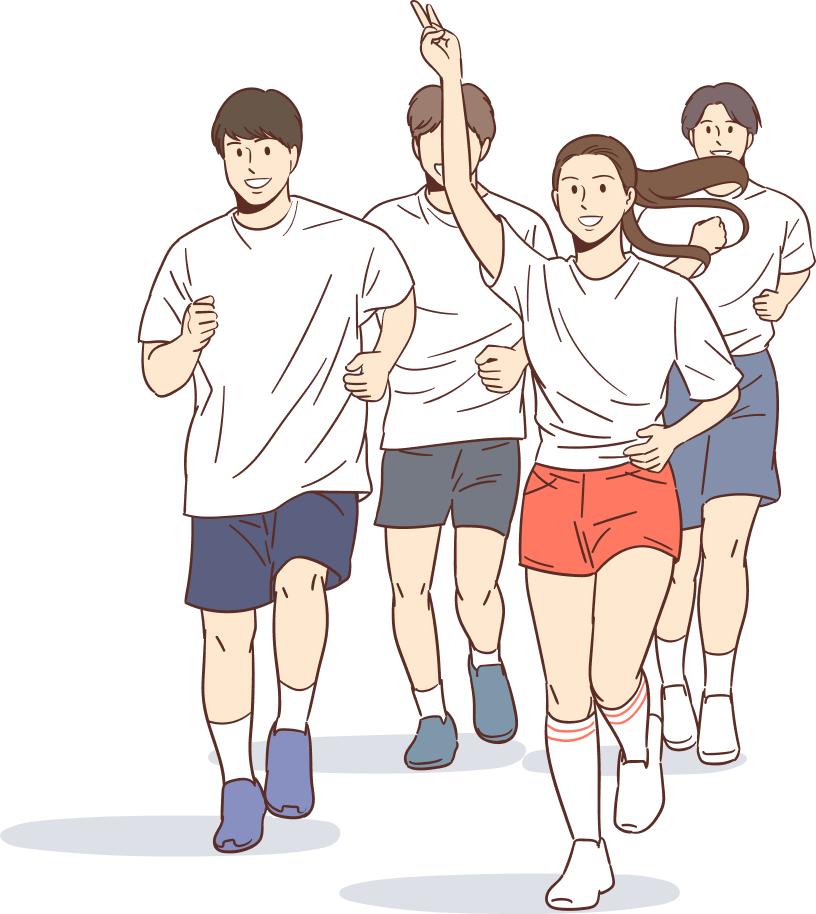

선수등록개요

- 선수 등록
-
대한민국의 모든 선수는 선수임을 증명할 수 있도록 선수등록을 마쳐야 공식적인 경기에 참가가 가능합니다.
선수등록은 매년 재등록해야하며, 전학/이적 등의 변경사항이 있을 때에도 재등록을 해야 합니다.
- 선수 등록 방법
-
선수등록은 다음과 같은 절차를 통해 이루어지며, 선수등록시스템은 신청/출력/과정확인의 역할을 담당합니다.
신청서는 출력하여 소속팀 대표자의 직인을 찍어 제출하고 승인완료를 기다리면 됩니다.
승인기준 / 등록비용 등은 각 종목에 따라 다를 수 있습니다.
승인이 완료되면 선수번호가 부여됩니다.
- 선수 등록정보조회
-
등록된 선수는 “신청정보 확인/수정” 메뉴나 스포츠지원포털 내 생애주기를 메뉴를 통해 조회할 수 있습니다.
등록된 선수에게만 부여되는 선수번호를 확인할 수 있으니 꼭 확인하시기 바랍니다.
- 회원종목단체 문의처 안내
-
선수등록 신청을 하시면서 궁금한 사항은 해당 회원종목단체로 문의해 주세요.
이용안내 > 1:1문의를 통해서 온라인 상으로 문의할 수도 있습니다.